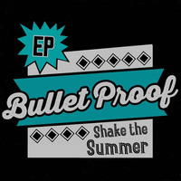

Bullet Proof - Shake The Summer (EP, 2018)
01 - Same Old Train (2:35)
02 - Shake The Summer (2:49)
03 - Good 'Ol Man (2:49)
04 - Hanging On My Dreams (2:38)
© Bullet Proof :: [Digital]
Notes
Elverum, Norway.
Martin - Vocals, Guitar
Marius - Guitar
Simen - Drums
Eivind - Upright Bass
reference information: Facebook page
Review
009/366 (Project 366)
Get ready, "Same Old Train" starts bright and unforgettably. Mightily, sweepingly and using all the surefire cliches, as the band did before, but with less and practically without show-offs, more grown-up. Very summer mood with the meaning of something epic. Modern Rockabilly with tremendous Rock'N'Roll intensity. This EP itself and the title song "Shake The Summer" are so peppy and energetic. Perhaps, this is so candy rock as fifties and sixties sweets can be. Power rockin' and rollin' pop, but in any case there is a strict Modern Rockabilly sound. And this second track, probably, with a clear sunshine mood. Sweet voice and airy-fairy melody. The third track "Good 'Ol Man" is even a bit alternative country with all these lovely vocals, singalong mood and nostalgic guitars. Some vibrations, some pumping, rustic rhythms a lot, voice strength. Very good. Called as a shake maybe! Well, and a stoner shake with the fourth track "Hanging On My Dreams". This song with fancy clapping - a good addition for this ballad, why not.
All in all, shine of rockin' star! Epic sound of records with valiant motive of tunes, solid voice and much more are gems of their EP. All musicians found an opportunity to prove themselves on their instruments. Even songwriting is cruisin' around. However I could to expect a bit more from Bullet Proof and this kind of release. But "Shake The Summer" is thematic and with a noticeably matched mood.